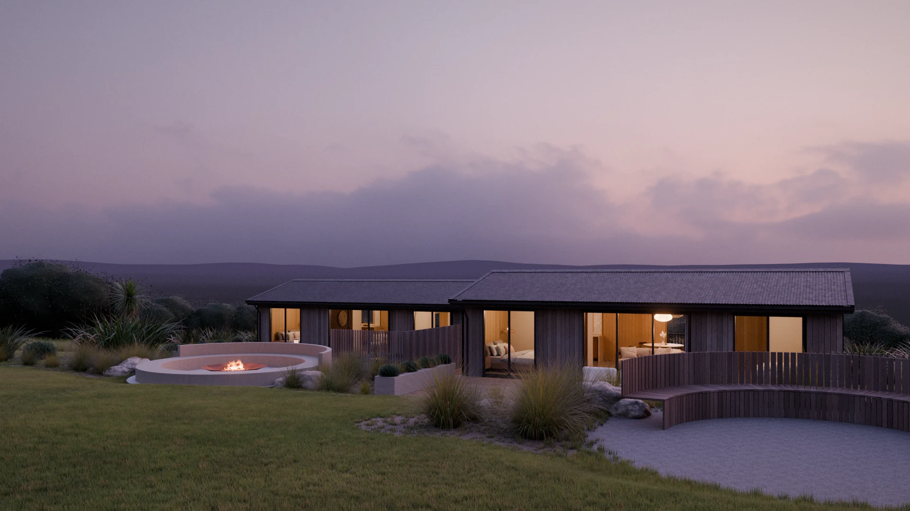

An independent concept · prepared for ArchiPro · November 2026
Five places AI pays at ArchiPro.
Every product in a project, readable by the assistants people now research with, and placed on the house they're actually building. Five ideas, each running on this page, so you can try them yourself.
- Live the 16A model, made by Plan to 4D from real drawings
- Sample suppliers, products, practice and queue
- Proposed the feed licence and every integration
Every product, tagged in the project. 16A, two timber homes. Sampled from the Plan to 4D model, not a scan.
00 / Why now
ArchiPro's own numbers say research has moved.
01 / The catalogue
The catalogue AI assistants quote.
When someone asks ChatGPT or Claude for a product, the answer should come from ArchiPro, link to ArchiPro, and send the enquiry through ArchiPro. That needs the catalogue published as licensed, structured data, not just pages.
Ask as a homeowner or an architect would
What we'd measure
- Sessions that arrive from an AI answer
- Enquiries from those sessions, on platform and on suppliers' sites
- Licensed feed calls, by partner
02 / Specify
A specification assistant for architects.
Set the brief once. The assistant shortlists from the catalogue, shows the trade-offs side by side, and writes the specification lines. It prepares the Building Code review for the designer; it never says a product complies.
03 / Home
A homeowner companion, on their real site.
From a brief to a shortlist to products on the house itself, in the real sun. This is the actual Plan to 4D twin of 16A, two timber homes from Kate's own resource-consent drawings. Pick a product and the house rebuilds with it.

Still from the twin. The live model is about 3 MB.
Sun at the site
04 / Join
From trial to paying member, self-serve.
A practice names its website. An agent reads only that site, drafts the profile, matches products in its projects to the catalogue and suggests a plan. The practice owner checks it and presses publish. Nothing goes live before that.
05 / Team
Agent teams across three markets.
Small teams in Auckland, Sydney and Los Angeles, with agents doing the preparation overnight. Each card is work an agent drafted. Nothing leaves ArchiPro until the named person approves it.
Audit log 0
06 / Already working
The same way of working, running in assembl's architecture studio.
The studio is a working team of 33 specialist agents for architecture, each with a named human reviewer and written limits. Its Building Code register is metadata only: it prepares the reviewer and can't claim compliance. These are its own records and measured runs.

07 / First ninety days
How I'd start.
- Weeks 1–3
Pick one, set the baseline.
Choose the idea with the clearest number behind it, likely the catalogue feed. Agree the measure, the window and where the data comes from before building anything.
- Weeks 4–8
Ship it to a small group.
A real feed, a real assistant integration, a few suppliers who opt in. Every change on a branch, tested in a browser, previewed, and approved before it goes live.
- Weeks 9–12
Read the evidence, then widen.
Show what moved, what it cost and what went wrong. Expand only if it clears the bar we set in week one.
Kate Hudson, founder of assembl. Thirteen years in brand and marketing strategy, starting as CRM manager at BMW. Now building with agents every day.